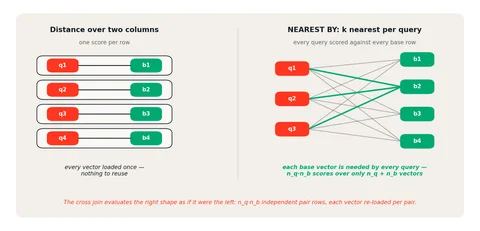
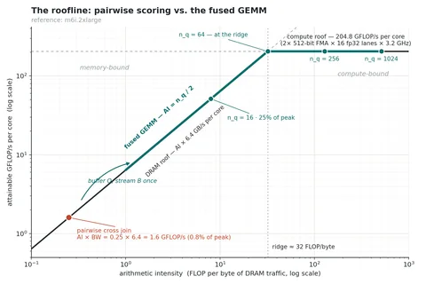
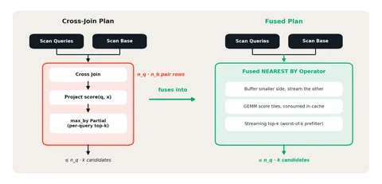
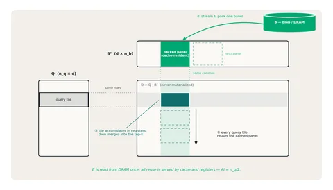
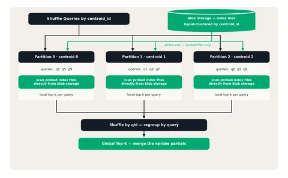

Databricks Runtime 推出 NEAREST BY Join
DataHot 速览
Databricks 官方博客介绍 Databricks Runtime 中的 NEAREST BY Join，用于扩展批量向量搜索。文章指出传统向量搜索多是在线低延迟服务，但平台上不少负载是批量匹配，如支付公司每天用 1 亿+ 交易匹配 1.4 亿商户 embedding，数据公司每晚富化数千万历史记录，量化基金对 5000 万向量语料运行百万查询批次。针对这类任务，文章提出应关注整批作业在 SLA 内以合理成本完成，并需要在查询与底库两侧扩展、弹性并行、单核算力优化和容错。
为什么值得关注：向量搜索常被当作在线服务优化，但实体解析、去重、语义打标等批量场景对数据平台同样关键；本文给出 Databricks Runtime 针对批式向量 join 的架构要求，值得数据工程与平台团队参考。
译文
AI 逐段翻译向量搜索最初是作为一个服务问题出现的。经典用例是聊天机器人或搜索栏：一个查询嵌入到达，系统经过优化，在几十毫秒内返回最近的 top-k 个文档。
然而，在我们的平台上，相当一部分向量搜索工作负载本质上是面向批处理的——在离线状态下预先计算精确或近似最近邻，而不是在请求时进行查找。一家支付公司将每天 1 亿多笔交易与 1.4 亿个商户嵌入进行匹配以完成实体解析；一家数据公司每晚对数千万条历史记录进行丰富；一家量化基金针对一个 5000 万向量的语料库运行百万查询批处理，用于分类体系标注。
实体解析、去重、语义标注、分类、记录丰富、批量推荐——这些从根本上都是批处理工作负载：按计划对数百万到数十亿个向量执行数百万次查询，衡量标准是作业能否以合理的成本在其 SLA 内完成，而不是单次查找的延迟。这些工作负载需要一种截然不同的架构，以获得更好的性能、可靠性和成本效率——因此我们回到第一性原理。
需求
- 聚合吞吐量优先于单请求延迟。 成功的单位是整个批处理作业以合理的成本在其 SLA 内完成，因此设计应抓住一切机会以单请求延迟换取吞吐量。
- 连接两侧都要可扩展。 最多可达数亿个查询向量对数十亿个基础向量。系统必须处理查询和基础基数所有形态。
- 弹性并行。 批处理吞吐量来自横向扩展。工作必须能够干净地划分到数百到数千个核心上，计算资源应随作业规模自行调整：运行时扩展，运行结束后缩容到零。
- 每核心峰值算术性能。 距离评分在计算上很昂贵。横向扩展只是倍增单核所能达到的性能，因此内层循环必须接近底层硬件的算术带宽（FLOPs/s）和内存带宽（字节/秒）所设定的理论最大值运行。
- 容错性。 一个运行数小时的作业必须能够在工作节点丢失、瞬态任务失败和内存压力（通过溢写到磁盘）的情况下存活。这些是执行引擎的属性，而不是我们可以围绕实时服务端点包装的功能。
Databricks Runtime 完美契合这些需求——一个构建在 Spark 和 Photon（一个向量化的原生 C++ 查询引擎）之上的分布式、容错、弹性执行引擎。这正是我们决定将向量搜索直接构建为引擎原生功能，而不是依赖独立基础设施的原因。
架构
我们的第一版 VECTOR_SEARCH SQL 函数被设计为将请求联邦到外部的实时 Vector Search 端点。它被实现为一个 Generate 节点，一次流式处理一行查询：每一行都会产生一次网络请求、一次需要反序列化的响应，以及可能的多次重试。它虽然能用，但暴露出了性能上限——吞吐量受限于实时端点的规模，而不是运行时集群的规模，运行时引擎被降级为一个调度器。它还错失了查询的真实形态。批量向量搜索不是一百万次小型搜索。它是一个大型查询：对于左侧的每一行，在右侧找到 k 个最近的行——一个 top-k 排名连接。执行超大型连接正是运行时引擎所擅长的。
在运行时引擎中原生实现向量搜索从两个角度带来收益。
- 单一数据副本。 嵌入保留在 Lakehouse 的 Delta 表中——没有单独的向量存储，没有需要保持一致的同步管道，没有需要运维和付费的第二套系统。
- 单一执行引擎。 搜索在一个引擎中运行，该引擎随工作负载弹性扩展，其内核专为批处理查询形态而构建——推动每个核心接近峰值 FLOPs，并让横向扩展倍增其余部分。该引擎已经具备容错能力：任务自动重试，内存压力溢写到磁盘。无需客户端并发控制、限流或重试循环。
这形成了一个刻意保持小巧但有深度的技术栈：一种新的连接语法 NEAREST BY，它使 top-k 排名连接成为一等关系操作；一个将其下沉到三个原语的重写——SIMD 加速的距离函数和有界 top-k 聚合；一个融合的 Photon 算子，用自定义 GEMM 内核替换整个计划的中间部分；以及一个可选的 IVF 索引，它被构建为普通的 liquid-clustered Delta 表，使 APPROX 查询能够用相同的内核只对一小部分基础向量进行评分。
语法：一个 top-k 排名连接
现有引擎收敛于两种接口形态。Postgres 搭配 pgvector 以及 Snowflake 将距离算子与 ORDER BY … LIMIT 组合——批处理则需要对每个驱动行使用 LATERAL 子查询，而优化器缺乏可供识别以区分 KNN 和 ANN 查询的模式。这种识别也很脆弱：一旦偏离预期的查询形态，快速路径就会悄无声息地消失。BigQuery 暴露一个表值函数——批处理是一等的，但列引用是解析器无法验证的字符串。
从结构上看，批量向量搜索是一种二元关系操作：两个表输入，一个结合两者的输出，一个连接它们的每左行 top-k。该语法将这种结构编码为原生的 top-k 排名连接：
该连接是非对称的，类似于 LATERAL：左侧驱动，右侧被搜索。排名方向是显式的：BY SIMILARITY 降序，BY DISTANCE 升序。LEFT OUTER 保留没有候选的查询行，并且 BY 表达式是可插拔的：两侧上任何可排序的标量都可以使用，因此其他评分表达式以后可以复用同一个子句。
APPROX 和 EXACT 编码了一种语义契约。EXACT 通过穷举评估保证真正的 top-k；APPROX 允许优化器在适用的情况下改用近似策略，例如 ANN 索引。因此，创建或删除索引绝不会静默地改变查询结果：只有指定了 APPROX 的查询才同意接受近似。
查询重写
NEAREST BY 会被解析为一个逻辑连接节点，优化器将其降低为标准关系算子：该重写为每个查询行打上一个生成的 id，对每个（查询，基础）对进行评分，使用分组 top-k 为每个 id 保留 k 个最佳结果，并将保留的行内联回输出：
从语义上讲，这封装了整个特性：一个交叉连接、一个标量评分表达式，以及一个分组 top-k 聚合。由于每个算子都是普通的关系算子，该计划会像任何其他计划一样进行分布式执行、溢写和重试——正确性和容错性自然获得。该重写真正隔离出来的是所有执行时间都要流经的两个原语：对一对进行评分的距离函数，以及为每个组保留 k 个最佳结果的聚合。
我们在 Photon 中原生实现了该计划中的每一个算子，另外还实现了一个专为向量搜索构建的额外融合算子，它用一个性能更高、对批处理更友好的内核将计划的中段完全合并。
Photon 内核
向量函数
核心构建块是一组作用于 ARRAY<FLOAT> 列的向量 SQL 函数。其中三个负责相似度和距离计算：
| SQL 函数 | 计算 | 更近意味着 |
|---|---|---|
| vector_inner_product(a, b) | 更高（BY SIMILARITY） | |
| vector_cosine_similarity(a, b) | 更高（BY SIMILARITY） | |
| vector_l2_distance(a, b) | 更低（BY DISTANCE） |
除了相似度和距离函数之外，我们还提供了两个范数辅助函数——vector_norm 和 vector_normalize，以及两个聚合函数，vector_sum 和 vector_avg。它们共同覆盖了查询和索引构建：距离函数为查询评分并将行分配到其最近的质心，而聚合函数和归一化函数则在 k-means 期间重新计算这些质心。
Photon 将整个函数家族作为原生 SIMD 内核运行。每个度量在核心上都是乘加运算，而单条融合乘加（FMA）指令每次发射即可在整个向量寄存器上计算 𝑎 · 𝑏 + 𝑐。这些内核基于四个深思熟虑的设计选择实现。
- 构造上可移植。 相同的内核必须在我们支持的每个云（AWS、Azure、GCP）和每种 CPU 架构（x86、ARM）上运行。由于它们之间的 SIMD 宽度和指令集不同，每个内核都会被编译成多个特定于 ISA 的克隆，并在运行时选择 CPU 支持的最佳版本（现代 Intel 核心上的 AVX-512，Graviton 上的 SVE2）。
- 零拷贝输入。 ARRAY<FLOAT> 在行内是连续的，因此每个向量都作为指向该列底层缓冲区的原始指针读取，没有拷贝，热循环内也没有逐元素索引。
- 宽松的浮点语义。 放弃严格的 IEEE 顺序允许编译器将乘加融合为 FMA 指令，并将归约拆分为并行累加器链，因此循环不会因单个运行和而串行化。
- 循环中没有任何标量操作。 热循环是纯向量化的乘加归约，sqrt 和除法等标量工作只在循环外执行一次。
top-k 聚合
在普通 SQL 中，分组 top-k 是一个窗口函数：ROW_NUMBER() OVER (PARTITION BY query ORDER BY score)。这会对每个分区进行完整排序，然后丢弃除 top k 排名之外的所有内容。我们改为扩展了现有的 max_by / min_by 聚合，增加了第三个 K 参数重载。该实现围绕四个关键特性构建。
- 单次比较选择。 每个组的聚合状态是一个有界堆，其根是驱逐候选和准入阈值。一旦堆满，每个候选都通过单次比较被接受或拒绝。候选流上从不运行排序。
- O(k) 状态。 每个组的内存与输入大小无关。针对十亿行评分的查询只携带 k 行状态，而 k 最高可达 100,000。
- 延迟物化。 堆存储的是索引，而不是完全物化的副本。候选保持为指向活动列式批次的指针，只有当批次被回收时该候选仍然存活，才会被复制到聚合状态中。
- 可分布式执行。 聚合具有部分/合并契约。每个分区发出其本地 top-k，shuffle 移动这些 k 元素数组而不是原始对，合并再重新插入它们。结果是精确的，因为全局 top-k 始终是部分结果并集的子集。
Roofline 模型
有了上述所有原生内核，查询计划已完全 Photon 化，但在批处理规模下仍远非最优。原因是理论上的，而非实现上的，而 roofline 模型 是一种简单而有效的可视化方式。
𝑃𝑎𝑡𝑡𝑎𝑖𝑛𝑎𝑏𝑙𝑒 = 𝑚𝑖𝑛(𝑃𝑝𝑒𝑎𝑘, 𝐴𝐼 × 𝐵𝑊)
𝑃𝑝𝑒𝑎𝑘 是硬件的峰值计算吞吐量（FLOPs/s），BW 是内存带宽（字节/秒），而 𝐴𝐼 是内核的算术强度（每移动一字节所执行的 FLOPs）。将 𝑃𝑎𝑡𝑡𝑎𝑖𝑛𝑎𝑏𝑙𝑒 对 𝐴𝐼 作图，我们就得到了 roofline：一条对角的内存屋顶与一条水平的计算屋顶在脊点处相交——这是内核能够受计算限制的最小 𝐴𝐼。在脊点左侧，只有减少每 FLOP 移动的字节数才有帮助；在脊点右侧，内核受计算限制，算术单元本身才是限制。具体来说，在一台参考 m6i.2xlarge 机器上（仅为示例，常量会随硬件变化）：
| 每核 |
|---|
| 计算吞吐量屋顶 |
| DRAM 带宽屋顶 |
| 脊点 |
*L1/L2 缓存屋顶比 DRAM 公平份额高出 30-60 倍，但基表远大于任何缓存，因此每个基础字节至少穿越一次 DRAM 边界。
*计算吞吐量屋顶随核心数线性扩展。一个由 64 台 m6i.2xlarge 执行器（每台 4 个物理核心）组成的集群峰值可达 64 x 4 x 204.8 GFLOP/s ≈ 52.5 TFLOP/s 的 fp32 FMA。

对两个对齐的列进行评分，每行产生一个分数——每个向量只被使用一次，不存在复用。NEAREST BY 形状仅从 𝑛𝑞 + 𝑛𝑏 个不同向量中产生 𝑛𝑞 × 𝑛𝑏 个分数，因为每个基础向量都被每个查询所需要。
现在比较在朴素计划与复用感知计划下向量搜索所移动的数据。两者的 FLOPs 完全相同：2 × 𝑑 × 𝑛𝑞 × 𝑛𝑏，其中 𝑛𝑞 和 𝑛𝑏 分别是查询侧和基础侧的基数，是嵌入维度。
| 计划 | 移动的字节数 | 算术强度 (AI) | 缩放 |
|---|---|---|---|
| 两两交叉连接 — 每个操作数都重新加载，仅使用一次 | 2 × 4 × 𝑑 × 𝑛𝑞 × 𝑛𝑏 | 1/4 | 0(1) |
| 融合 GEMM — 缓冲，单次流式读取 | 4 × 𝑑 × 𝑛𝑏 | 𝑛𝑞/2 | 0(𝑛𝑞) |

两两评分被固定在 DRAM 斜率上，仅为峰值的 0.8%，而融合 GEMM 内核的算术强度随着批量大小增长：𝐴𝐼 = 𝑛𝑞/2 — 使其在 𝑛𝑞 = 64 时越过脊点，并在更大的批量下运行在计算屋顶上。向量距离和相似度内核对其输入形状接近最优，但朴素计划形状没有可利用的数据复用，批处理也无济于事：配对爆炸使 FLOPs 和字节数同等倍增。修复方法是融合算子计划，让内核利用数据复用，算术强度随之而来。
融合算子与 GEMM 内核
融合算子是单个 Photon 执行节点，取代交叉连接、距离/相似度投影，以及可选的局部 top-k。它缓冲较小的输入，以批量方式流式处理另一个输入，使用自定义 GEMM 内核按查询-基础瓦片进行评分，并在 k 足够小时跨瓦片维护每个查询的 top-k 状态。在 top-k 融合的情况下，其输出最多为 𝑛𝑞 × 𝑘 个候选行，而非 𝑛𝑞 × 𝑛𝑏 个配对，由下游的 max_by / min_by 合并内核消费。每个任务的峰值内存为被缓冲侧 + 一个在途批次 + 0(𝑛𝑞 × 𝑘) 选择状态。分布遵循标准连接策略——当较小侧适合时广播，否则对两侧进行分区并运行块笛卡尔积。

如 roofline 模型所示，融合改变了我们在内存中移动的字节数，而非我们执行的 FLOPs。每个基础向量在加载后对所有缓冲查询评分一次，因此算术强度随批量线性增长，并在 𝑛𝑞 = 64 时越过参考脊点——远低于典型生产工作负载的批量大小。当基础侧较小时同样如此，算术强度随保持驻留的那一侧缩放。
越过脊点是必要的，但不是充分的。𝑛𝑞/2 的字节数是下面分块 GEMM 内核的直接结果。越过 DRAM 屋顶只是将瓶颈下移，移到缓存带宽，然后是 FMA 延迟。
具体而言，该内核是在分数矩阵 𝐷 = 𝑄 · 𝐵𝑇 上的经典分块 GEMM。外层循环每次在基础上推进一个向量面板，并将每个面板按维度优先打包，以便在查询瓦片间复用。由于嵌入维度本身被分块为多个面板，中间循环在获取下一个面板之前，将每个缓冲的查询瓦片与打包面板进行遍历。最内层循环在一个维度面板上于寄存器中累加一个小输出瓦片；对于宽于单个面板的嵌入，运行中的部分和被暂存在分数缓冲区中，读回以继续下一个面板。每个完成的瓦片被写入一个有界的、回收的分数缓冲区，流式 top-k 就地消费，因此完整的 𝑛𝑞 × 𝑛𝑏 分数矩阵永远不会写入 DRAM。

有两个级别的分块来改善数据复用。打包的基础面板在查询瓦片间复用，以促进 CPU 缓存命中，而寄存器分块使每个加载的值贡献于多个 FMA。每个瓦片大小平衡两个相互竞争的考虑：
- 打包面板大小：面板应足够小，以舒适地放入缓存，但足够大，以限制保存和重新加载部分结果的开销。嵌入维度上的每个边界都需要通过分数缓冲区进行一次往返。更大的面板减少该流量，但可能增加缓存未命中。
- 寄存器瓦片大小：累加器和操作数应适合可用的向量寄存器，同时提供足够的独立累加以重叠 FMA 延迟。更大的瓦片增加数据复用并暴露更多独立工作，但也增加寄存器压力以及溢出到内存的风险。
大多数生产工作负载以相对较小的 k 运行，因此我们针对该情况优化了流式 top-k。每个查询的选择状态保持在融合算子内部，每个分数瓦片在仍在缓存中时合并到选择中，完整的 𝑛𝑞 × 𝑛𝑏 矩阵永远不会到达 DRAM。一旦查询持有 k 个条目，其最差分数成为准入阈值，使合并能够在每次向量化比较中拒绝多个分数。只有幸存的行被收集到输出。当 k 足够大以致该状态成为内存压力时，算子单独运行分块 GEMM，并将评分瓦片交给现有的 max_by / min_by 部分。在此回退下，每对发出一个 𝑓𝑝32 分数花费 4 𝑏𝑦𝑡𝑒𝑠，对应 2𝑑 𝐹𝐿𝑂𝑃𝑠，因此 𝐴𝐼 = 𝑑/2——对于任何现实维度仍远超脊点。
向量索引
到目前为止的所有内容都加速了穷举 KNN（k-最近邻）搜索；它们都没有改变穷举搜索是 0(𝑛𝑞 × 𝑛𝑏) 这一事实——一百万次查询对十亿行就是 10^15 次点积，没有任何寄存器瓦片能摊销掉一个指数。这就是 APPROX 和向量索引的用途。
该索引是经典的 IVF（倒排文件）设计。索引在语料库的样本上训练 k-means 以生成一组质心。每个基础行被分配到其最近的质心，查询时每个查询只对其最近簇中的向量进行评分。剪枝与 𝑛𝑏 叠加：在数十亿规模下，一个查询探测语料库的 ≤ 0.1%，距离计算量比暴力方法少几个数量级。我们选择 IVF 而非图索引，是因为独立的簇扫描可以在各执行器间并行化，且布局天然适合列式存储，而图遍历是一连串串行查找。
在物理层面，该索引是一张普通的 Delta 表。分配行将向量与其质心 id 相邻存放，且该表按质心 id 进行 liquid clustering。每个簇的候选向量在 blob 存储上连续存放，簇未被任何查询探测的文件在读取之前就被剪枝。刷新是事务性且增量的。
APPROX 查询重写为相同的原语：用相同的 top-k NEAREST BY 连接探测质心，按质心 id 进行等值连接以将每个查询限制在其探测的簇内，评分并取 top-k，然后合并。自上次刷新以来新增的文件在补偿分支中进行暴力计算，并并入同一合并过程，因此过期的索引剪枝更少，但绝不会降低搜索质量。
查询执行由查询基数和基础表基数决定。
| 场景 | 连接策略 | 关键特征 |
|---|---|---|
| 小索引表，小查询表 | BNLJ，广播索引 | 全部在内存中 |
| 小索引表，大查询表 | BNLJ，广播索引 | 查询保持分区并流式处理，将索引广播到所有节点 |
| 大索引表，小查询表 | BNLJ，广播查询 | 索引分区流式处理，广播探测的查询 |
| 大索引表，大查询表 | 按质心 ID 进行等值连接，对索引进行原地 shuffle | 按质心 ID 对探测的查询进行 shuffle；利用索引的 liquid clustering 避免对索引进行完整 shuffle |
大-大场景正是 liquid clustering 发挥最大作用的场景：只有查询侧移动；每个探测的查询被 shuffle 到其簇所在的分区，而索引侧直接扫描匹配质心 id 的文件。每个分区恰好探测自己簇的候选向量。

在一个分区内，每个簇的候选向量以密集连续的块形式到达，因此适用相同的 GEMM 内核。精确路径全局运行一次；近似路径每个簇运行一次。每个查询的局部 top-k，重新分组，合并部分结果：聚合的部分/合并契约正好完成它被设计来做的事。
结果
我们在从客户观察到的典型工作负载上评估了 NEAREST BY，基础表范围从 10 万到 50 亿个向量，查询批次高达 1000 万个向量，目标为至少 96% 的 recall@K。使用索引 ANN：
- 语义去重： 对一张 1000 万条记录的表进行自连接在几分钟内完成，检索出用于重复检测的候选匹配。
- 分类与打标签： 以 1000 万个查询搜索 10 万个参考向量耗时不到一分钟，通过相似的已标注示例支持分类。
- 推荐刷新： 一批 100 万个查询针对 1000 万个目录向量在几分钟内生成推荐候选。
- 实体解析与丰富： 以 100 万个查询搜索 10 亿个参考向量在几分钟内完成，为关联记录和检索额外上下文提供候选匹配。
总结
批量向量搜索不需要一个新系统——它需要成为已经持有数据的那个系统的一等公民。NEAREST BY 将工作负载表达为其结构上的本质：一个 top-k 排名连接。roofline 模型解释了为什么朴素计划是内存受限的，以及任何更快的内核必须对此做什么。融合算子及其分块 GEMM 将该分析转化为算术强度，而向量索引进一步扩展它，同时仍是一张普通的 liquid-clustered Delta 表。这些新机制被刻意设计得简单、狭窄，但深入且有效：一个连接子句、七个向量函数、一个聚合重载、一个融合算子，以及一个存储布局决策。其他一切，从 shuffle 和溢出到治理和自动扩缩容，都随运行时引擎而来，经过十多年的构建和打磨。
如果你对在 Databricks 为大规模 AI/ML 工作负载构建硬核计算机系统感兴趣， 来和我们一起构建！
立即下载 试用 NEAREST BY——阅读文档
这篇内容对你有用吗？
反馈只用于改善内容筛选，不等同于收藏